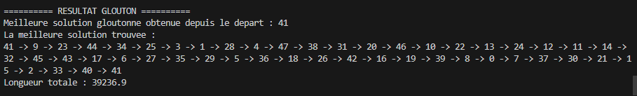
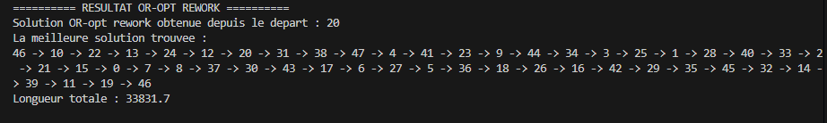
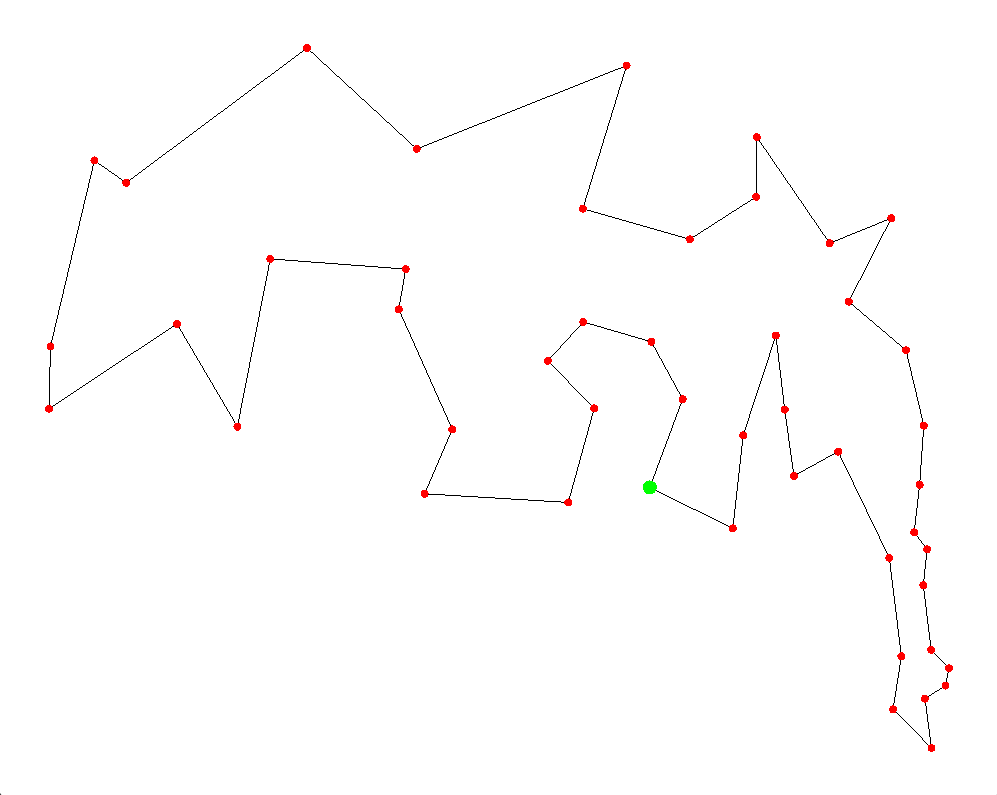

Fonctionnement général
Notre programme prend en entrée un fichier .tsp contenant une instance du problème du voyageur de commerce.
Le programme lit les données, calcule les distances, construit une solution gloutonne, puis améliore cette solution avec OR-opt.
Étape 1 : Lecture de l'instance
Le programme commence par ouvrir le fichier .tsp.
Il récupère :
- Le nom de l'instance
- Le nombre de villes
- Les coordonnées
- Le type de distance
Les informations sont ensuite stockées dans la structure InstanceTSP.
Étape 2 : Calcul des distances
- Lecture du fichier .tsp (instance)
- Construction de la matrice des distances
- Exécution de l'algorithme glouton
- Test de plusieurs villes de départ
- Sélection de la meilleure solution
- Amélioration avec OR-opt
Lorsque les coordonnées sont présentes, le programme calcule automatiquement les distances entre toutes les villes.
Les distances sont stockées dans une matrice représentée sous forme de tableau 1D.
Étape 3 : Construction gloutonne
L'algorithme glouton démarre depuis une ville de départ.
À chaque étape, il choisit la ville non visitée la plus proche.
Exemple :
0 → 3 → 5 → 2 → 1 → 4 → 0
Cette solution est rapide à obtenir, mais elle n'est pas forcément optimale.
Capture de la méthode gloutonne
Cette capture montre le résultat obtenu avec la méthode gloutonne.

Étape 4 : Amélioration OR-opt
Une fois la solution gloutonne construite, OR-opt essaye de l'améliorer.
L'algorithme déplace certaines villes à différents endroits du chemin afin de réduire la distance totale.
Tous les déplacements possibles sont testés.
Le meilleur déplacement est conservé, puis l'algorithme recommence jusqu'à ce qu'aucune amélioration ne soit trouvée.
Exemple après amélioration :
0 → 2 → 5 → 3 → 1 → 4 → 0
Capture après OR-opt
Cette capture montre le résultat obtenu après l'amélioration OR-opt.

Affichage graphique avec SFML
Le programme utilise la bibliothèque SFML pour afficher graphiquement la solution finale.
Les villes sont représentées par des points rouges, tandis que la ville de départ apparaît en vert.
Les lignes noires représentent le trajet suivi entre les différentes villes.
Cela permet de visualiser graphiquement la solution obtenue après l'amélioration OR-opt.

Comparaison des résultats
- Glouton : très rapide mais parfois éloigné de la meilleure solution.
- OR-opt : plus lent mais permet d'obtenir un meilleur trajet.
- Résultat : la combinaison des deux méthodes donne une solution efficace et améliorée.
Exécution du programme
Le programme est exécuté depuis le terminal.
Exemple :
.\voyageur_de_commerce.exe att48.tsp
Le programme affiche ensuite :
- Les informations de l'instance
- Le meilleur départ trouvé
- Le chemin final
- La longueur totale